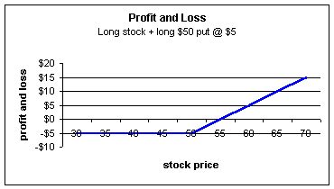
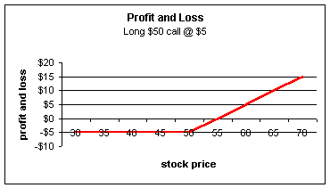
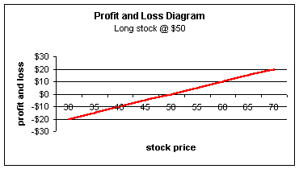
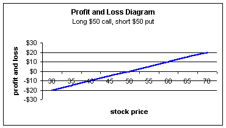
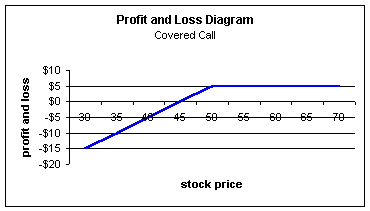
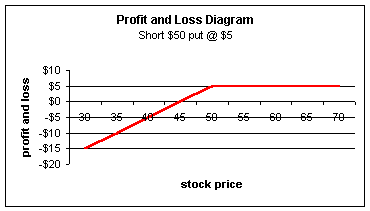

The name sure sounds intimidating, but synthetic options are fairly easy to understand and are truly a fascinating and useful part of options trading. Understanding synthetic positions will allow you to effectively do things many traders will tell you cannot be done, such as shorting stock on a downtick (or even when no stock is available), buying calls or selling naked puts in an IRA, buying stock for virtually no money, and a host of other imaginative strategies. Further, understanding synthetics will give you great insights into option pricing. You will understand how options are created, and why the market makers are quoting the puts and calls the way they are.
In order to understand these mysterious sounding options, you need to understand one of the most fundamental concepts of option pricing known as put-call parity.
Put-call parity is a relationship showing that call and put prices are very dependent on one another, and not just arbitrarily chosen. In order to understand the put-call parity equation better, it's best to show how orders are filled on the floor of the exchange. Here's an example of how it works:
Say you want to buy 10 calls to open of the ABC $50 strike (with 1 year to expiration) at market. ABC stock is also trading at $50.
When this buy order is received on the floor, the market maker must become the seller so that the transaction can be completed. This means the market maker must be willing to be short a call. Now, while you may be totally comfortable in speculating by buying 10 calls, the market maker may not be so eager to be on the short side. The reason is this: Market makers are in the business to take 1/8th's or 1/4th's of a point on a large number of trades; they are not really too interested in holding open speculative positions over long periods of time -- especially short calls that have unlimited upside risk!
If the market maker is to be short a one-year call, his risk will be that the stock goes higher. So, in order to protect himself from this risk, he will purchase 1,000 shares. No matter how high the stock moves, he will always be able to deliver 1,000 shares of stock (represented by the 10 calls) at expiration.
However, now there is a new risk; the stock may fall. So to protect himself from this, he will buy a $50 put with one year to expiration.
Now our market maker is now long 1,000 shares of stock, long 10 $50 put options and short 10 $50 call options. Because he is short 10 calls, he can now fill your order to be long 10 calls. But what price should he charge?
Here is what's interesting about this position: The market maker is now fully hedged (protected) against any stock price movement at expiration. This means he cannot lose on the position! How? Well, the stock price can do one of three things between now and expiration of the call:It can stay the same, go up or go down. If the stock stays exactly at $50, the call and put expire worthless and the market maker's position is worth exactly $50,000, which is the amount he originally paid for the stock. If the stock closes above $50, the long put will expire worthless and the market maker will get assigned on the short call and lose the stock; however, he will be paid the $50 strike and receive exactly $50,000. Likewise, if the stock closes below $50 at expiration, the short call will expire worthless and the market maker will exercise his put and receive $50,000.
With the long stock at $50, long $50 put and short $50 call, the market maker is now guaranteed to receive $50,000 in one year. It is kind of ironic by using these speculative derivatives of puts and calls we can actually create a risk-free portfolio!
Now, if any financial asset is guaranteed to be worth a certain amount in the future, then its value today must be worth the present value discounted at the risk-free rate of interest.
| PRESENT VALUE/FUTURE VALUE are "time
value of money" concepts used throughout the
financial industry to describe the value of
assets at different points in time. The concept
of time value says that a dollar today is worth
more than a dollar tomorrow because the dollar
today can be invested and earn interest. For
example, if you deposit $100 into an account
that pays 5% interest, you will have $100 (1+5%)
= $105 in the future. So the future value
of $100 today is $105 if interest rates are 5%.
Similarly, if someone owes you $105 one year from now and interest rates are 5%, then you should be willing to accept $105/(1+5%) = $100 today. In other words, it should make no difference to you by waiting one year and receiving $105 or collecting $100 today. The reason is that you can take the $100 today, invest it at 5% for one year, and still have your $105 a year from now. So the present value of $105 one year from now is $100 (if rates are 5%). To calculate the present value, we simply take the future value of the asset and divide it by 1 + risk-free interest rate. |
The market maker is guaranteed to receive $50,000 in one year regardless of the stock price. So the present value of $50,000 in one year is $50,000 / (1.05) = $47,619 today. The market maker should pay $47,619 today for these three assets -- the stock, long put and short call positions. Why? If he pays $47,619 and receives $50,000 in one year, his return on investment will be 5%, which is exactly the interest rate he should receive for a risk-free investment.
The market maker will spend $50,000 for the 1,000 shares of stock trading at $50. Let's also assume he pays $5 for the put. Now he will spend an additional $5,000 for the put for a total cash outlay of $55,000. We already figured that the fair price for this package of three assets should be worth $47,619 yet he's paying $55,000 for it.
The market maker has overpaid by $55,000 - $47,619 = $7,381, so he will need to bring in a credit for this amount. How can the market maker receive a credit of $7,381? Easy -- he will fill your order on the 10 $50 calls for roughly $7-3/8. Doing so, he will receive the necessary credit to make his -$55,000 cash outlay equal to -$47,619. Of course, the market maker will try to make an 1/8 or 1/4 point profit, so the order would probably be filled around $7-1/2.
To summarize, the market maker's initial position looks like this:
Buy 1000 shares at $50 = -$50,000
Buy 10 $50 puts at $5 = -$5,000
Sells 10 $50 calls at $7 3/8 = +$7,375
Equals -$47,625 cash
outlay by market maker.
This is guaranteed to grow to a value of $50,000 in one year ($47,625 * 1.05 = $50,000) because of the full hedge provided by the 3-sided position.
This three-sided position (long stock + long put + short call) established by the market maker is called a conversion. If he does the reverse (i.e. short stock + short puts + long calls) then it is called a reversal or reverse conversion.
We have shown that the market maker's three-sided position (conversion) is guaranteed to be worth the present value of the exercise price. Remember, he was short $50 calls and long $50 puts; the stock must either be above or below this price at expiration, resulting in a cash inflow of $50 -- the exercise price. Because he's guaranteed this strike price, the long stock + long put + short call position must be worth the present value of the exercise price. We can rewrite this using S for stock price, P for put price, C for call price, and E for exercise price as follows:
And therein lies the magic of synthetic options!
Notice the notation with the plus and minus signs. The long put position is denoted by a "+" sign and the short call is denoted by "-". This will be important to remember later.
To make things a little easier to understand, we know the present value of E (the right side of the equation) is guaranteed to grow to E so it behaves like a risk-free investment -- a T-bill (or Treasury bill, treasury note or treasury bond). We can therefore rewrite the above equation as:
With some very basic algebra, we can create many interesting positions. We will take it slow with lots of examples, so hang in there!
This equation is known as put-call parity. If you know the value of a call option, you can immediately figure out the value of the put.
Before we can continue with some examples, there is one note we need to make with an example. Let's say we are interested in seeing what a long stock + long put position are equal to. Using the equation, S + P - C = T-bill, how can we get the S + P (the pieces we are interested in) by themselves? Algebraically, we need to get the C to the other side of the equal sign; we need to add C to both sides. Now we have S + P = C + T-bill.
What does this mean? It means that someone holding long stock and a long put in a portfolio (the left side of the equation) will have exactly the same portfolio balance at option expiration as another person holding a call plus a T-bill (the right side of the equation).
Let's see if it holds true:
Assume we are interested in 1-year options and interest rates are 5%:
Investor A holds stock at $50 and a $50 put (left side of the equation)
Investor B holds a $50 call and a T-bill (right side of equation)
Investor B will pay $50,000/(1.05) = $47,619 for the T-bill.
At expiration:
|
Portfolio A |
Portfolio B |
||||||
|
Stock price |
Stock |
$50 put |
Total Value At Expiration |
T-bill |
$50 Call |
Total Value At Expiration |
|
|
35 |
35 |
15 |
50 |
50 |
0 |
50 |
|
|
40 |
40 |
10 |
50 |
50 |
0 |
50 |
|
|
45 |
45 |
5 |
50 |
50 |
0 |
50 |
|
|
50 |
50 |
0 |
50 |
50 |
0 |
50 |
|
|
55 |
55 |
0 |
55 |
50 |
5 |
55 |
|
|
60 |
60 |
0 |
60 |
50 |
10 |
60 |
|
|
65 |
65 |
0 |
65 |
50 |
15 |
65 |
|
|
70 |
70 |
0 |
70 |
50 |
20 |
70 |
|
|
75 |
75 |
0 |
75 |
50 |
25 |
75 |
|
|
80 |
80 |
0 |
80 |
50 |
30 |
80 |
|
|
85 |
85 |
0 |
85 |
50 |
35 |
85 |
|
Regardless of where the stock closes, investor A will be worth exactly the same as investor B; there are no differences in the two portfolios. Why does this happen? Portfolio A can never fall below $50 -- the strike of the put. However, if the stock rises, investor A will participate fully. Portfolio B must grow to a value of $50 because that is the T-bill portion and is guaranteed. Portfolio B, like A, can never have a value below $50. If the stock rises, investor B's call will start to increase in value by the same amount as the increase in stock in A's portfolio so both A and B receive all of the upside potential in the stock.
Portfolio B is said to be the synthetic equivalent of portfolio A. Also A can be said to be the synthetic equivalent of B.
So, a synthetic equivalent -- or synthetic -- is any position that has exactly the same profit and loss, at expiration, as another position using different instruments.
Now here's the one small adjustment I was referring to at the beginning of this section. By definition, synthetic positions only track the changes in portfolios and not the total value. For example, in the above example with investor A and B, the total value of B's portfolio is the same as A's. To have the synthetic equivalent, we only need to look at the changes. If B just held the $50 call option and not the T-bill, he would exactly reflect the changes in A's portfolio.
For example, if A buys the stock for $50 and it falls to $40, A can exercise the put and receive $50 -- so A starts with a value of $50 and ends with $50 and therefore has no change. Portfolio B would also reflect no change as well. The $50 call will expire with a value of zero. If the stock is trading at $60 at expiration, portfolio A will be worth $60, from $50, reflecting a change of $10. Portfolio B will also change by $10, as the $50 call will now be worth $10.
The whole point of all this is that, with the original equation S + P - C = T-bill, we can ignore the T-bill on the right hand side; it accounts for total value and not the changes in portfolio value.
Now our equation is even easier! All you need to know is:
And you can figure out any synthetic position!
Now that you have the necessary equation, let's work through lots of examples to get the hang of synthetic options.
For starters, remember that we said the above is equal to a T-bill? Well, if you are long stock + long put + short call you are said to be holding a synthetic T-bill; the positions will behave exactly the same at expiration.
Synthetic long call
Using the equation, S + P - C = ?, we are in a position
to find out. We are trying to find out the synthetic
value of a long call, so we need to get a +C
(remember, we are using "+" to denote a long position)
on one side of the equation. If we add C to both sides
and we get: S + P = C, and there's the answer; long
stock and long put (left side of the equation) will
behave just like a long call (right side). Therefore,
if you hold long stock and a long put, you have a
synthetic call position.
Let's check the profit and loss diagrams to see if we're correct:
 We can easily see there is no difference between long stock + long $50 put purchased at $5 (left chart) and long $50 call purchased at $5. The person holding the long stock and long put raised the cost basis of their stock from $50 to $55, that's why their break-even point is now $55. However, they still participate in all of the upside movement of the stock. What if the stock falls? The investor is protected for all prices below $50, which is the strike of the put. The worst that can happen is for the stock to fall to zero. This investor will exercise the put and receive $50 effectively only losing on the $5 they paid for the put; therefore the maximum loss is $5.
For the call holder (right chart), they paid $5 so their maximum loss is also $5 but they too participate in all of the upside of the stock. The stock will have to be $55 at expiration in order for the call holder to break even.
It should now be apparent that call owners get downside protection as well as a put holders; the call keeps you from losing value in the stock because you are not holding the stock!
So how do you own calls in an IRA? Now you should know. Use the synthetic equivalent and buy the stock and put. Your return on investment will be much lower than the person who buys the call because of the difference in capital required to purchase the stock, but the two positions will behave the same way at expiration.
Synthetic long stock
Without looking ahead, see if you can use the equation S
+ P - C = ? and solve it for long stock.
Because we have +S on the left side already, let's move the C and P to the other side. To do this we need to add C and subtract P from both sides. If you did it correctly you should find that S = C - P. Now you know that a trader holding a long call and short put (right side of equation) are actually holding synthetic stock (left side).
Looking at the profit and loss diagrams for each:
 We see there is no difference in the two positions. The long stock purchased at $50 (left chart) will gain and lose point-for-point to the upside as well as the downside. The same holds true for the long $50 call and short $50 put (right chart). The $50 call will gain point-for-point at expiration while the short put will become a liability (loss) point-for-point if the stock should fall.
So synthetic stock is long call plus a short put. What would synthetic short stock be? Just the opposite, long put and short calls. This is great to know for all traders involved in short selling. Now you know how it is possible to short stock without an uptick or when stock is not even available for shorting -- use synthetics and buy the put and sell the call.
How much will it cost to short synthetic stock? Theoretically you should receive a credit. This can be shown by the original equation S + P - C = Present value of E. If we rearrange so that C - P = S - Present value E we see that, if S and E are equal (in other words, at-the-money), then S - Present value E must be a positive number. In order for C - P to be positive, C must be more expensive than P. Because you are buying puts and shorting calls, you should get a slight credit. Realistically though, because of bid-ask spreads and commissions, it will probably cost you a slight debit.
Synthetic covered call
Hopefully you are getting the hang of this, but we'll do
one more to be sure. What is a synthetic covered call?
We know a covered call is long stock plus a short call,
so it would be represented by S - C in our equation.
Looking at the equation S + P - C = ?, we need to get S
and -C on one side. In order to do that, we can just
subtract P from both sides and get S - C = -P. A
covered call position is synthetically equivalent to a
short put.
|
 |
|
 |
As expected, the profit and loss diagrams are the same. For the covered call position (left chart), the investor buys stock at $50 and sells a $50 call for $5, effectively giving the stock a cost basis of $45, which is the break-even point. If the stock rallies, the investor will be forced to sell it for $50 regardless of how high the stock moves. The short put (right chart) is at risk for all stock prices below $50, which is offset by the $5 premium received, which gives a break-even point of $45.
How can an investor sell puts in an IRA? Using synthetics, one can buy stock and sell calls, which is exactly the same thing from a profit and loss standpoint.
It is a little ironic that most brokerage firms require level 3 option approval to short puts yet require only level 0 to enter covered call positions. Synthetically, they are exactly the same thing. If you wouldn't short a put on a particular stock, you shouldn't enter into the covered call either.
Incidentally, if you do enter a into a covered call position, you should see the benefit of entering the order as a buy-write (please see our section under "Buy-writes" for more information). Doing so gives the market maker two of the three sides necessary to complete a reversal. This gives the market maker a guaranteed trade so they are very eager to get them filled. Most of the time, you will receive a better fill than the natural at the time the trade is placed.
It is a good idea to practice with the synthetic relationships of any trade you are thinking of entering. Doing so will help you understand synthetics as well as give you additional insights into the way the trade will behave at expiration.
As a guide, remember that there are three pieces to the puzzle: Stock, calls and puts. The synthetic of any one of the pieces will always be some combination, either long or short, of the remaining two. For example, a synthetic call will be some combination of stock and puts. Synthetic stock will be a combination of calls and puts.
Once you become proficient with synthetics, you will certainly become a better options trader!